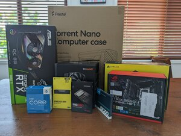

Personal Goals and Hobbies
By Byron Bursett
This page is for my personal goals and projects that I am working on or have worked on. I have many different hobbies that I am passionate about and want to continue improving them.
Music
I have always been very passionate about music and performing arts. When I was in third grade I took a small course on learning the recorder and reading simple sheet music. From then on I continued to practice until 5th grade when I could join the school’s band. I picked the clarinet and continued to play all the way until my senior year in high school. When I was in 7th grade I joined the marching band. It was a fantastic way for me to take what I had learned on the clarinet and incorporate marching into it as well. The other instrument that I play is the drumset. The drumset is a lot different from the clarinet, recorder, and singing because it is all about rhythm. My father and sister both play the guitar and sing so it was a perfect opportunity for me to learn the drums so I could play with them. I have continued to play from 8th grade all the way until now.
Cooking
When I was about 5 my mom started teaching me how to cook. Since then I have collected many different cookbooks and recipes that have allowed me to deepen my knowledge of cooking. I mostly cook Mexican and Italian food, but I have been dabbling in asian cooking recently and hope to find a good recipe book I can use to help me.
Computers
Similar to how my mom influenced me with cooking, my dad was a large influence on me with the technical side of my life. He works as a computer programmer and as such, we have a lot of computers at home that I have helped build and maintain over the years. I love taking them apart and seeing how they work as well as working on software and coding to speak to the computer. This skill has helped me so much throughout my life to save money and help others with technical issues that they might have. As I study in college I am constantly finding ways that I can improve my skills and I absolutely love it.
